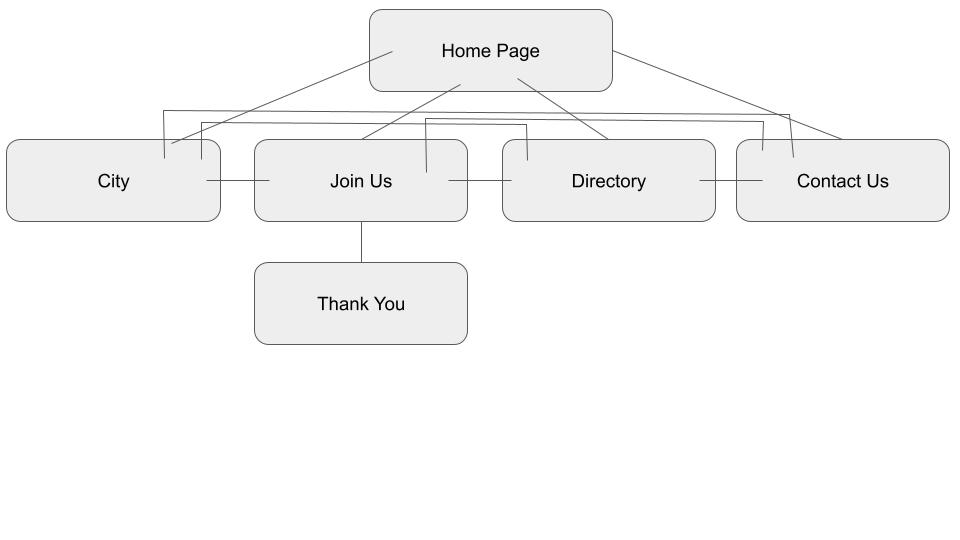

Purpose
About the purpose of this website is to have a centralized location on the web where community members, and potential chamber members can find all relevant info on the Chamber of Commerce. Anyone who wants to learn, join, or get in contact with the Chamber of Commerce can do so; all in one convenient location.
Target Audience
The target audience for this website is business owners live in the city of Rexburg. The website will contain relevant and appropriate content that will interest business owners to potentially join the Chamber of Commerce. It will also serve members of the community as a secondary audience who wish to know more about the chamber's business history and other information pertaining to the Rexburg Chamber of Commerce.
Color Scheme
Typography
- All headings will use the Volkhov font found on google fonts
- All bodytext and other non-headings will be use a standard sans-serif font. ('Segoe UI', Tahoma, Verdana, sans-serif;)